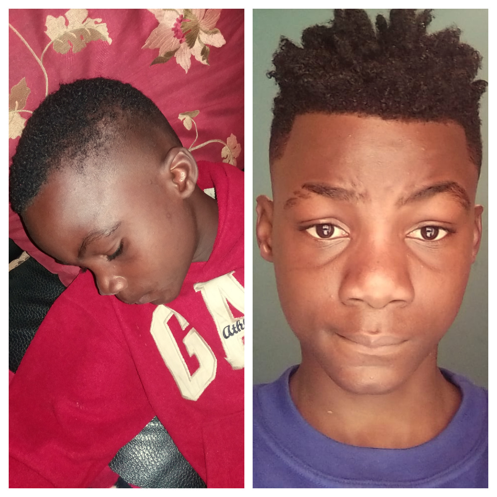

Conheça a Hístoria de um menino Programador
Desde os seus 12 anos isto em 2020 este menino "Nucelmo Meia" começou a programar os seus primeiros sites com HTML assistindo um canal que lhe ensina a programar que é o canal Curso em Video de Gustavo Guanabara.
Só que depois de 5 meses ele parou de programar porque ainda não era algo que ele verdadeiramente queria fazer. Era meio que ainda uma obrigração posta pelo seu pai Filipe Meia este que é o Ceo&Fouder da empresa Qlerius.
Só depois em 2024 ele voltou a programar depois de 4 anos ele conheçeu em um amigo na escola que era viciado em programação (Rodrigues Mujila),que despertou o seu gosto e afeição por programação então ele voltou a programar como já tinha esquecido uma variedade de tags então resolveu fazer um curso completo de Html com um canal chamado programação-web terminou o curso de html.
E desenvolveu o seu primeiro site com Html básico que foram o (HackerForGood) e depois disso ele não parou procurou fazer mais um curso completo de css com o seu professor de 2020 o propio Gustavo Guanabara.